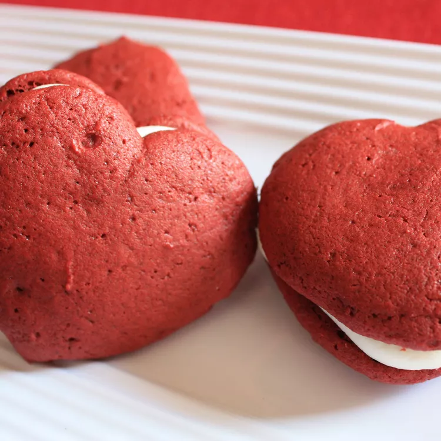

<!DOCTYPE html>
    <html lang="en">
        <meta charset="UTF-8">
        <title>How to Make Red Velvet Cookies</title>
    </html>

    <body>
        <h1>Red Velvet Cookies</h1>
        
        <h2>Description</h2>
        <h3>These red velvet cookies are just as good as the cake, only on a 
            smaller scale. They melt in your mouth!</h3>
        <h2>Ingredients</h2>
        <h3>Cookies</h3>
            <ul>
                <li>2 cups all-purpose flour</li>
                <li>1/2 teaspoon baking soda</li>
                <li>1/2 teaspoon salt</li>
                <li>2 1 oz squares unsweetened baking chocolate, broken into pieces</li>
                <li>1/2 cup unsalted butter, softened</li>
                <li>2/3 cup brown sugar, firmly packed</li>
                <li>1/3 cup white sugar</li>
                <li>1 large egg</li>
                <li>1 tablespoon red food coloring</li>
                <li>3/4 cup sour cream</li>
                <li>1 cup semisweet chocolate chips</li>
        <h3>Cream Cheese Frosting</h3>
                <li>1/4 cup unsalted butter, softened</li>
                <li>4 oz cream cheese, at room temperature</li>
                <li>1/2 teaspoon vanilla extract</li>
                <li>2 cups confectioners' sugar, sifted</li>
        </ul>
        <h2>Steps</h2>
            <ol>
                <li>Preheat the oven to 375 degrees F (190 degrees C) with the rack in the 
                    middle position. Grease baking sheets or line with parchment paper. 
                    Sift flour, baking soda, and salt together.</li>
                <li>Place chocolate in a microwave-safe bowl and microwave on High until chocolate melts, 
                    about 90 seconds. Stir chocolate until smooth and set aside to cool.</li>
                <li>In a large bowl, beat 1/2 cup butter, brown sugar, and white sugar until light and 
                    fluffy; add egg and beat until smooth. Mix in red food coloring and chocolate, 
                    scraping the bowl down regularly, until evenly blended, about 30 seconds. 
                    Add half of the flour mixture, stirring until well incorporated. 
                    Beat in sour cream and mix in remaining flour mixture. Fold in chocolate chips. 
                    Drop spoonfuls of dough 2 inches apart onto prepared baking sheets.</li>
                <li>Bake one sheet at a time in the preheated oven until cookies spring back when pressed, 
                    about 9 minutes. Cool in the pans for 5 minutes before removing to cool completely on 
                    a wire rack.</li>
                <li>Whip 1/4 cup butter, cream cheese, and vanilla until smooth. Blend in confectioners' sugar 
                    in 1/2 cup portions until frosting reaches the desired consistency.</li>
            </ol>
    </body>